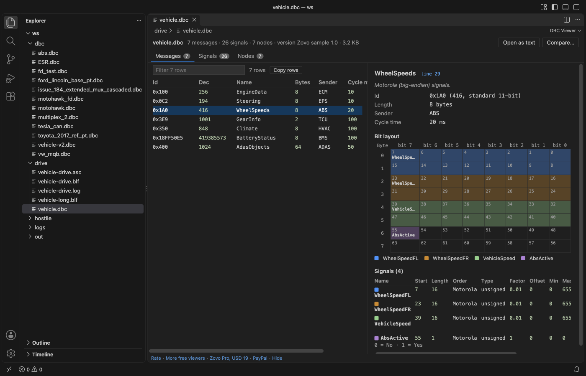

Open files in VS Code and Cursor / Binary, network and hardware
See which bits each signal uses in a CAN message
A DBC line such as SG_ WheelSpeedFL : 7|16@0+ (0.01,0) gives a start bit, a length and a byte order, and Motorola signals are easy to place wrong by hand. DBC Viewer & CAN Log Viewer opens the .dbc file in VS Code and draws each message as a grid of bytes and bits, one colour per signal, with Intel and Motorola numbering and overlapping bits outlined. Viewing is free. Zovo Pro (USD 19 once) adds a compare of two DBC files that lists changed start bits, lengths and factors, with 3 free tries.
Free, MIT license. Extension ID zovo.zovo-can-dbc-viewer, version 0.1.1. Needs VS Code 1.90.0 or newer.

Steps in VS Code
- Install DBC Viewer & CAN Log Viewer from the Marketplace, or press Ctrl+P (Cmd+P on macOS) and run
ext install zovo.zovo-can-dbc-viewer. - Click the
.dbcfile in the Explorer. It opens in the DBC viewer on the Messages tab, with id, name, length, sender and cycle time. - Click a message, or type an id or a name in the filter box. The pane on the right shows its id, length, sender and cycle time.
- Read the Bit layout grid. Each row is a byte, from byte 0, and the columns are bit 7 to bit 0. Each cell shows its bit number, and the cell of the most significant bit of a signal shows its name. Hover over a cell to see the signal and the bit.
- Use the legend under the grid to match colours to signals. Bits that two signals use are outlined, and a line says how many there are. For a multiplexed message, pick the multiplexer value above the grid.
- Read the Signals table under the grid for start bit, length, Intel or Motorola order, type, factor, offset, minimum, maximum, unit, multiplexing and receivers. The line link next to the message name opens the DBC text at that message.
Where Zovo Pro saves time
The DBC viewer with the bit layout, the Signals, Nodes and Value tables tabs, the CAN log viewer and the checks are free, with no limit and no sign-in. Click Open as text for syntax colours, an outline and checks in the Problems panel for overlapping signals, bits outside the message, duplicate ids and names, multiplexed signals without a multiplexer and syntax errors.
When a new version of a DBC arrives, a moved start bit or a new factor breaks your decoder without any error. Compare two DBC files lists the messages and signals added, removed or changed, with the id, length, start bit, factor, offset, unit and value tables that changed, as a Markdown report. The other Pro tools export the decoded signals of a whole log to CSV and plot up to 8 signals over time.
With Compare two DBC files (Zovo Pro)
- With one DBC open, click Compare... at the top of the viewer, or run "CAN Viewer: Compare two DBC files (Pro)" from the Command Palette.
- Pick the other DBC file. Escape uses no try.
- Read the report. A try counts only when the tool gives you a result.
Compare two DBC files works 3 times on your computer before it asks for a license, and a try counts only when you get a result. Opening a file shows no popup and no countdown.
Zovo Pro costs USD 19 once. It is not a subscription, and it turns on the Pro tools in every Zovo extension, not only DBC Viewer & CAN Log Viewer. After a card payment (Stripe) your license key shows on the next page. In VS Code, run "Zovo Pro: Enter Zovo Pro license key" from the Command Palette and paste it. The key is checked on your computer, with no network call. With GitHub Sponsors, pick the "$19 one time" tier, then run "Zovo Pro: I already paid: unlock with GitHub Sponsors" and sign in with the same GitHub account. With PayPal, send USD 19 with "Zovo Pro" in the note and the key comes by email within a day.
A team of 5: USD 59 once, by card or by PayPal. Every rule and every Pro tool is on the Zovo Pro page.
Steps in Cursor, Windsurf or VSCodium
- Open the Extensions view with Ctrl+Shift+X (Cmd+Shift+X on macOS).
- Search for
zovo.zovo-can-dbc-viewerand click Install. Cursor, Windsurf and VSCodium install from Open VSX, where it is published aszovo/zovo-can-dbc-viewer. - If your editor has no gallery, download the .vsix from the Open VSX page and run "Extensions: Install from VSIX...".
- Then use it the same way as in VS Code.
What DBC Viewer & CAN Log Viewer handles
- Standard 11-bit and extended 29-bit ids, and CAN FD messages up to 64 bytes, drawn with one row per byte.
- Intel (
@1) and Motorola (@0) byte order, signed and unsigned signals, and float and double signals fromSIG_VALTYPE_. - Multiplexed signals (
M,m3) and extended multiplexing withSG_MUL_VAL_. - Value tables (
VAL_andVAL_TABLE_), comments andGenMsgCycleTime.
What it does not do
- The viewer is read-only. To change a signal, click Open as text and edit the DBC in the text editor.
- A multiplexed message shows the signals of one multiplexer value at a time.
- The viewer opens
.dbcfiles only. Other CAN database formats are not read.
Other options
- cantools. A free Python package.
python -m cantools dump vehicle.dbcprints each message with a text drawing of its bit layout. - Vector CANdb++. The DBC editor that comes with Vector tools such as CANoe. It shows the layout of each message. It runs on Windows and needs a Vector install.
Install counts and Open VSX status were checked on 13 November 2026. Descriptions in quotes are the extensions' own.
Questions
What is the difference between Intel and Motorola byte order?
Intel (@1) is little-endian. The start bit is the least significant bit, and the signal runs on into the next byte. Motorola (@0) is big-endian. The start bit in the DBC is the most significant bit, the signal runs down through that byte and then on into the next byte. The grid draws both the right way.
What does an outlined bit mean?
Two signals that are sent in the same frame use that bit, which is a mistake in the DBC. In a multiplexed message, only the signals of the multiplexer value you picked are drawn and checked against each other.
Can I decode a CAN log with this DBC?
Yes. Open a BLF, ASC, TRC or candump log. A DBC in the same folder is used by itself. See Open a BLF or ASC CAN log and decode it with a DBC.
Does it work in Cursor or Windsurf?
Yes. Cursor, Windsurf and VSCodium install extensions from Open VSX. Search for the extension in their Extensions view and install it there.
More about DBC Viewer & CAN Log Viewer
Read the DBC Viewer & CAN Log Viewer page for every feature and setting, or the source code on GitHub.
Related guides
- Open a BLF CAN log and decode it with a DBC file
- Use a hex editor in VS Code
- Open a binary file in VS Code
- Open a PCAP file in VS Code
Zovo Pro and support
Zovo Pro: USD 19 once, every Zovo viewer. It turns on the Pro tools in this extension and in the other Zovo extensions you use. The free features stay free.
After a card payment your license key shows on the next page. Paste it with the command "Zovo Pro: Enter a key".
You can also support the work with no Pro:
Need your format supported?
Open a format request with a sample file, and I reply there whether it can be done. For USD 299 once, through this GitHub Sponsors tier, I add your file format or a missing feature to this extension, with tests, within 7 days.